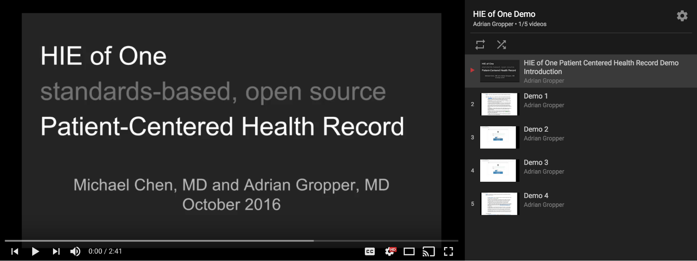

Patient-Centered EHR Features and Demo
Michael Chen, MD and Adrian Gropper, MD
October 15, 2016
March 29, 2017 - NOSH 2.0 and an updated blockchain-enabled version of HIE of One is in the works. As of today, the online demo is no longer available while we upgrade and debug a better mobile EHR experience and the very-soon-to-be-public blockchain sign-on technology from our Ethereum partners. This may take a couple of weeks. Thank you for your patience.
In the meantime, check out the 6 short videos of the old demo on this playlist, 22 min. total.
This website demonstrates a patient-centered health record based on the FHIR and HEART interoperability standards. Skip to the old demo.
The 6 short videos in this playlist cover the demo essentials, but please, do try them yourself.

CAUTION: The open source code associated with this demo is intended to inform standards and regulations and is NOT SECURE and NOT TESTED FOR CLINICAL USE. We hope you will join our GitHub communities and contribute.
Introduction
Demo Use Cases
User Credentials and this Demo
Demos
Demo 1 - Alice uses a patient portal to consent to health information exchange.
Demo 2 - Dr. Smart can preview and work directly in Alice’s patient-centered health record.
Demo 3 - Alice wants a second opinion from Dr. Second in a new practice.
Demo 4 - Dr. Second is a curbside consult and wants to work directly in Alice’s patient-centered record.
Summary and Next Steps
Next Steps
Figures and Sequence Diagrams
References
Source Code
HIE of One
Standards
Related Projects
Figure 1 - Three Actors and their Agent Technology
Introduction
The user experience for both clinicians and patients is designed to match the typical health information exchange (HIE) “opt-in” pattern where patients are given a simple form for consent to HIE participation and everything else follows without further action by the patient. The typical HIE experience is also maintained from the clinician perspective. As with most HIEs, a clinician using a FHIR and HEART-aware EHR can access the patient-centered record even before that patient has knowingly authorized such access.
Beyond the typical HIE experience, our patient-centered EHR can be accessed by clinicians directly without an EHR by simply using a standard or mobile Web browser. This is convenient for second opinions, telemedicine, and privacy-sensitive encounters where the physician-patient team decides they would rather avoid exposure to a large institutional EHR. Other benefits include a solution to the multiple portals problem as HIE of One provides a single point of contact across all of the hospitals, practices, health plans, and other service providers with a standard FHIR and HEART interface. Unlike typical HIEs, the HEART-enabled HIE of One allows the patient fine-grained control over sharing parts of their health record and even specific users within an institution.
Demo Use Cases
The demo shows two FHIR + HEART EHRs. The first EHR, used by Dr. Smart, has our patient, Alice, already registered and able to access the EHR patient portal. She simply enters her “medical email address” (a regular email address optimized for medical interoperability) and consents to a linkage between the EHR and her patient-centered health record. The second EHR, used by Dr. Second, represents a new provider and doesn’t yet have Alice registered. That user has received a link to Alice’s patient-centered health record and must supply his credentials to be allowed access. This second EHR also demonstrates the “clipboard” use-case because, once the credentials are accepted, patient registration, demographics, insurance, and key medical history can be automatically transferred from Alice’s patient-centered health record to the new provider’s EHR.
User Credentials and this Demo
Typical EHRs maintain HIPAA compliance through a complex credentialing process for all users. This credentialing is either delegated to a participating (federated) hospital or it is done directly by a licensed physician. The patient-centered approach to health records interoperability can also use federated hospital credentials but it can also accept direct access by individual physicians listed in a trusted directory (e.g: a medical society directory). Unlike typical HIEs, HIE of One is not limited to interoperability within a specific state. In this demo, standards-based identity federation is represented by OpenID Connect compliant Google ID and the physician directory is represented by the national NPI database. A future update will add self-sovereign ID based on blockchain technology.
Demos
(NOTE: Click the Demo 1, 2, 3, or 4 link for the corresponding sequence diagram.)
(NOTE: In this demo, https://shihjay.xyz is Alice’s personal domain hosting her personal tech.)
Demo 1 - Alice uses a patient portal to consent to health information exchange.
DEMO HINT: In Step 1, 8, etc… Open the link in a New Tab to keep these instructions open.
- Reset Demo - Please enter your email address for updates - we won’t share it with anyone. A 10-minute timer reduces demo collisions. Reset Demo hides the one-time initialization that gave Alice a blank patient-centered health record account.
- Patient Portal - You are Alice, a patient of Dr. Smart. Sign In. If challenged, you will find demo ID / password as you mouse-over a field.
- Introduce Your Patient-Centered Record - Alice enters an email address linked to her patient-centered record, the only thing for her to remember. Accept the demo hint.
- Opt-In - Alice also signs-in to her HIE of One authorization server and allows Dr. Smart’s practice to use her patient-centered record. Alice’s default policies are shown and can be changed. Notice how patient-centered design eliminates patient ID matching problems.
- Confirmation - Dr. Smart’s EHR confirms the FHIR / HEART linkage. Alice is done. A convenience link to her HIE of One combined list of connected practices. patient-centered health record.
- Browse - The HIE of One Authorization Server lists the NOSH patient centered record and the recently added mdNOSH practice of Dr. Smart. The button lets Alice browse her very sparse record.
- Logout - Logout in the upper right menu (AS) or Lock (health record) to prepare for the next demo. You can then close these tabs.
Demo 2 - Dr. Smart can preview and work directly in Alice’s patient-centered health record.
- Sign-In as Dr. Smart into your practice. You will see Alice on your patient list. Alice’s name clicks to a preview. The green button takes you to her patient-centered record.
- Preview - Click Alice’s Name to get a SMART-app-inspired quick look at her patient-centered record. Click Medication List.
- Authenticate to Alice’s authorization server. Click . (Recall Step 4 where Alice’s policies allowed your practice as a trusted identity provider.)
- Identify - Alice’s authorization server is politely asking you to identify yourself. In this case, your identity is an email address but it could be anything. Click Allow.
- Preview - Your mdNOSH practice management system is like a SMART app into Alice’s patient-centered record. Click Medications. Click back to Patient Summary.
- Click - Single sign-on takes you her patient-centered record. (You may need to click Login with mdNOSH again).
- Write a prescription - Click Edit Medications on the left pane. Click + Add and fill in the name, dose, quantity, frequency, and reason. Click Save.
- Logout of Alice’s patient-centered health record by clicking the tiny lock icon in the upper right corner.
- Back to Patient List and Patient Summary > Medication List. Note how FHIR has updated the quick look at Alice’s medications to include the one you just prescribed.
- Logout from mdNOSH. You’re logged out of mdNOSH practice management system and Alice’s patient-centered health record. Close the mdNosh and patient-record tabs.
Demo 3 - Alice wants a second opinion from Dr. Second in a new practice.
His practice’s FHIR EHR does not have Alice as a patient yet and needs her “clipboard” information.
- Sign-In as Alice - Alice, or anyone with access to her patient-centered record can launch an invitation. Click to the Share page using the green arrow.
- Invite - Use your Gmail address in the middle block for an invitation. Click Submit. (Recall Step 4 where Alice’s policies allowed Google as a trusted identity provider.)
- Scope of Access - Alice can accept the defaults or limit the scope of FHIR resources that Dr. Second and his practice can access. Click Send Invitation.
- Logout of Alice’s patient-centered health record by clicking the tiny lock icon in the upper left corner. Check Gmail for a link to Alice’s patient-centered record. Don’t click it!
- Sign-in as Dr. Second - Unlike Dr. Smart, you are using a plain FHIR / HEART EHR that is not configured to single sign-on to Alice’s patient-centered record.
- Enter the Link - On your patient list page, copy/paste the link you received into the patient search box. (We pre-filled it to saved you the fuss) (NOTE: the patient link could have come from an HIE relationship locator service or a Direct message into the EHR.)
- Authenticate - The requesting party, Dr. Second has no prior relationship with Alice but Alice’s policies trust Google as an identity provider. Login with Google.
- Clipboard Preview - FHIR / HEART enable transfer of Alice’s info from her patient centered record to the Clipboard holding area of Dr. Second’s EHR. Note her meds.
- Register Alice - Dr. Second clicks Add Patient to convert the clipboard info into a new patient registration and add Alice to his patient list.
- Logout Dr. Second. He is now logged out of his practice management system. This is needed for Demo 4.
Demo 4 - Dr. Second is a curbside consult and wants to work directly in Alice’s patient-centered record.
- Sign-In as Alice - Alice, or anyone with access to her patient-centered record, clicks to the Share page - the green arrow.
- Invite - Use your Gmail address in the middle block for an invitation. Click Submit. (Recall Step 4 where Alice’s policies allowed Google as a trusted identity provider.)
- Scope of Access - Alice can accept the defaults or limit the scope of FHIR resources that Dr. Second and his practice can access. Click Send Invitation.
- Logout of Alice’s patient-centered health record by clicking the lock icon in the upper right corner. Check Gmail for a link to Alice’s patient-centered record. (HINT: If you don’t actually want to check your Gmail, the link is: https://shihjay.xyz/nosh/login/provider ) Don’t click it!
- DEMO NOTE: To see standards-based OpenID Connect sign-on, copy and paste the link into another browser where you’re not signed-in to Gmail. Login using Google.
- NPI Check - Alice’s policies may want to check Dr. Second’s credentials beyond what Google ID required. For now, we’re using the NPI Registry, which is not secure.
- Browser Access - What if Dr. Second doesn’t have an EHR? Click the link to launch a Web browser and access Alice’s EHR directly. You can write a prescription here too.
You’re almost done...
- Please Leave a Comment or question. Consider joining the HEART Workgroup to address your interoperability concerns.
Summary and Next Steps
You have demonstrated a number of benefits for both physicians and patients enabled by the combined FHIR and HEART standards:
- A patient-centered health record that’s controlled by Alice and her physicians instead of any particular institution.
- A simple user experience for the patient and the physicians, modeled on Opt-In consent behavior typical of today’s health information exchanges.
- Using FHIR / HEART to automate the patient registration clipboard experience.
- Single sign-on based on identity federation standards.
- A cure for the multiple portals problem as multiple provider relationships are listed on a single patient-chosen management page.
- A solution to the patient ID matching problem based on standards and a patient-centered health record linked to an email address.
Next Steps
- Integrate blockchain-based self-sovereign ID as an alternative to federated single sign-on.
- Demo independent decision support at the point of care for physicians and patients.
- Improved user experience through access to a physician directory within the EHR.
- Demonstrate the provisioning of a new patient-centered health record.
- Integrate a blockchain-based time stamping service for audits of patient-centered health record activity.
Figures and Sequence Diagrams
Figure 2 - Resource Registration Consent
Figure 3 - Sequence Diagram for Resource Registration Demo

Figure 4 - Sequence Diagram for User of EHR with Already-Registered Patient

Figure 5 - Sequence Diagram for EHR and New Patient Registration
Figure 6 - Sequence Diagram for Clinician Signing-In to Patient-Centered EHR Directly
References
Source Code
HIE of One
Standards
Related Projects